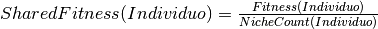
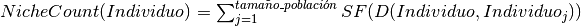
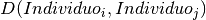
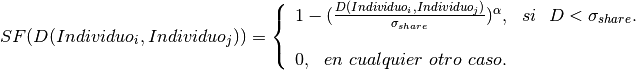

SharingFunction (módulo)¶
En esta sección se almacenan las técnicas relativas al Sharing Function
(ó Función de Compartición).
El objetivo de estas técnicas se delega a un rol secundario pero aún así
muy importante y consiste en realizar un filtrado más minucioso de los mejores Individuos
y así tomar a los candidatos elegidos para dejar descendencia.
La operación es útil en casos en el que la calidad de los Individuos es muy similar y entonces
se desea seleccionar a los que son superiores, sin embargo, es menester mencionar que, en exceso, dicha selección
parsimoniosa puede dar lugar a un efecto negativo del Selective Pressure (ó Presión Selectiva, véase Model/MOEA).
Esto provoca que, lejos de dar una Población de elementos óptimos, los Indviduos se queden estancados
puesto que al tener todos cargas genéticas muy similares, existe una pobre exploración genética en
sus cromosomas y entonces no se llegará a una optimización de funciones objetivo adecuada.
Es por ello que no todos los MOEAS (véase Model/MOEA) lo utilizan, sin embargo se decidió implementar
esta sección ya que extrapolando las circunstancias, en cualquier momento se puede hacer uso de técnicas
de esta índole.
Haciendo énfasis en la parte matemática, el Sharing Function funciona así:
Cada Individual (ó Individuo) tendrá asociado un Shared Fitness (ó Fitness Compartido) que fungirá como el
Fitness original asignado a cada Individo y el cual será obtenido de la siguiente manera:

Para fines de implementación el Shared Fitness será colocado en la misma variable utilizada para almacenar el Fitness
original, esto por cada Individuo.
El Niche Count es un valor que indica qué tan cercano en calidad se encuentra un Individuo con respecto de los demás.
La forma de calcularlo es la siguiente:

Donde  es la distancia que existe entre el Individuo i y el Individuo j;
mientras que el SF es el Sharing Function.
Entonces el SF se define como:

Donde  es una variable que casi siempre se asigna a 1 (aunque en este proyecto se le
da la libertad al usuario de seleccionar valores distintos) y
es una variable que casi siempre se asigna a 1 (aunque en este proyecto se le
da la libertad al usuario de seleccionar valores distintos) y  marca el límite en el
cual dos Individuos se consideran cercanos en calidad, es decir, viven en el mismo Niche.
marca el límite en el
cual dos Individuos se consideran cercanos en calidad, es decir, viven en el mismo Niche.
es una variable que casi siempre se asigna a 1 (aunque en este proyecto se le
da la libertad al usuario de seleccionar valores distintos) y marca el límite en el
cual dos Individuos se consideran cercanos en calidad, es decir, viven en el mismo Niche.Llegados a este punto, si bien la parte que se utilizará finalmente es el Shared Fitness,
sólo las técnicas concernientes a
serán las que se implementen en esta sección, pues lo demás siempre se mantendrá estático.
Siendo más específicos con base en lo anterior, existen dos tipos de funciones de Distancia:
- De Similaridad Genotípica (ó Genotypic Similarity).
- De Similaridad Fenotípica (ó Phenotypic Similarity).
La primera indica en pocas palabras que la comparación se hará usando únicamente características relacionadas
con el cromosoma, mientras que la segunda implicará la comparación de características externas como las funciones objetivo
evaluadas con las variables de decisión de cada Individuo ó las variables de decisión por sí solas.
Eventualmente se desea que el usuario implemente sus propias funciones, por ello es que, además de añadir
el método en el listado localizado en Controller/XML/Features.xml, deberá implementar las siguiente funciones:
-
calculate_sigma_share(population,sharing_function_parameters): - Realiza el cálculo del factor sobre el cual se hará el cuestionamiento
de Individuos cercanos en calidad.Es importante mencionar que la función debe regresar un escalar que representa el límite máximo para el cual dos Individuos se consideran en el mismo Niche.
Parameters: - population (Instance) – La Población sobre la cual se hará el cálculo correspondiente.
- sharing_function_parameters (Dictionary) – Un diccionario que puede contener opciones adicionales para el cálculo de la distancia entre Individuos.
Returns: Un valor escalar que representa el límite de cercanía para cualesquiera dos Individuos de una Población.
Return type: Float
-
calculate_distance(individual_i,individual_j,sharing_function_parameters): - Calcula la distancia de calidad que existe entre dos Individuos cualesquiera.Dada la simpleza del método, se puede usar independientemente de las categorías antes especificadas.Es importante resaltar que la función debe regresar un escalar que aluda a la distancia entre los Individuos.
Parameters: - individual_i (Instance) – El Individuo para calcular distancia.
- individual_j (Instance) – El Individuo para calcular distancia.
- sharing_function_parameters (Dictionary) – Un diccionario que puede contener opciones adicionales para el cálculo de la distancia entre Individuos.
Returns: Un valor escalar que indica la distancia entre los Individuos.
Return type: Float
A continuación se muestran las subcategorías correspondientes: